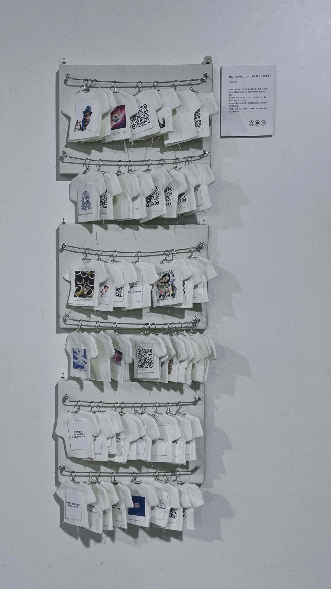

MEME VINTAGE SHOP
2025

ミーム・ヴィンテージショップ
CONCEPT
私は、感情や記憶、経験、そして日常の中で出会った言葉や映像など、自分に影響を与えてきたものを「ミーム」と捉えた。
ヴィンテージという概念は、単に古いものを指すのではなく、誰かの手を経て時間を重ねることで、新たな価値や意味が生まれるものだと考えている。ヴィンテージショップで服を選ぶとき、その服が持つ時間や、そこに残された誰かのセンスを感じるように、ミームもまた、人から人へと受け継がれ、それぞれの経験を通して変化していくものではないだろうか。
自分の中に蓄積された価値観や感情も、すべてが自分だけから生まれたものではない。誰かの言葉や作品、何気ない出来事から影響を受け、それらが自分なりの解釈と結びつくことで、今の自分を形づくっている。
本作品では、そうしたミームの蓄積と伝達のプロセスを、ヴィンテージショップという身近な形式を通して可視化することを試みた。
DESIGN & EXPERIENCE
展示空間は、実際のヴィンテージショップのように、作品をハンガーに掛けて壁に並べる構成とした。自分にとって意味のあるもの、力を与えてくれた言葉、インスピレーションの源となった映像などをカテゴリごとに整理し、それぞれを一つのアイテムとして扱っている。
作品を壁に並べることで、目に見えない感情や記憶を、選び、手に取り、眺めることのできる存在へと置き換えた。また、鑑賞者が展示を一方向から眺めるだけでなく、ショップで自分の好みに合う服を探すように、興味を持った作品を自由に選びながら鑑賞できる体験を目指した。
同じアイテムでも、手に取る人によって感じ方や解釈は異なる。誰かにとって大切な記憶や価値観が、別の誰かにとって新しい発見やインスピレーションになることもある。
ミームを受け取り、自分の中で変化させ、また誰かへと受け渡していく。その循環を、鑑賞者自身が体験できる空間として表現した。